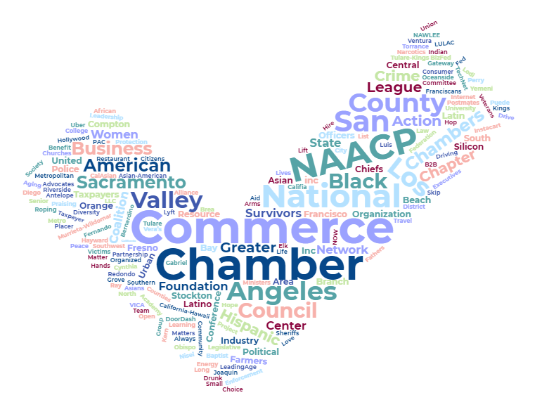

The App-Based Drivers as Contractors & Labor Policies Initiative

What are the two campaigns?

Establishes different criteria for determining whether app-based transportation (rideshare) and delivery drivers are “employees” or “independent contractors.”
Independent contractors are not entitled to certain state-law protections afforded employees—including minimum wage, overtime, unemployment insurance, and workers’ compensation. Instead, companies with independent-contractor drivers will be required to provide specified alternative benefits, including: minimum compensation and healthcare subsidies based on engaged driving time, vehicle insurance, safety training, and sexual harassment policies. Restricts local regulation of app-based drivers; criminalizes impersonation of such drivers; requires background checks. Summary of estimate by Legislative Analyst and Director of Finance of fiscal impact on state and local governments: Increase in state personal income tax revenue of an unknown amount.Yes On Prop 22
A "yes" vote supports this ballot initiative to define app-based transportation (rideshare) and delivery drivers as independent contractors and adopt labor and wage policies specific to app-based drivers and companies.
No On Prop 22
A "no" vote opposes this ballot initiative, meaning California Assembly Bill 5 (2019) could be used to decide whether app-based drivers are employees or independent contractors.
Raised
Donors
- x
- y
- z